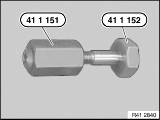
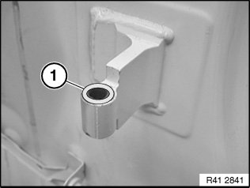
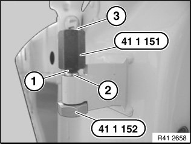
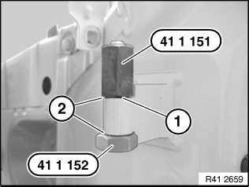

Front Door Hinge: Service and Repair
41 51 ... Replacing door hinge bushing (door removed)
Special tools required:

Set of special tools 41 1 150 comprises:
Bush 41 1 151
Screw 41 1 152

Cut off hinge bushing in area (1) with chisel.
Drive out remainder of hinge bushing with punch.

Insert screw 41 1 152 with new hinge bushing (2) into hinge.
Screw bushing 41 1 151 with flat end (3) pointing upwards onto screw 41 1 152.
Turn bushing 41 1 151 until taper (1) borders hinge bushing.
Unscrew bushing 41 1 151 again.

Twist bushing 41 1 151 with flat end (1) onto screw 41 1 152.
Turn bushing 41 1 151 until gap dimensions (2) are identical.